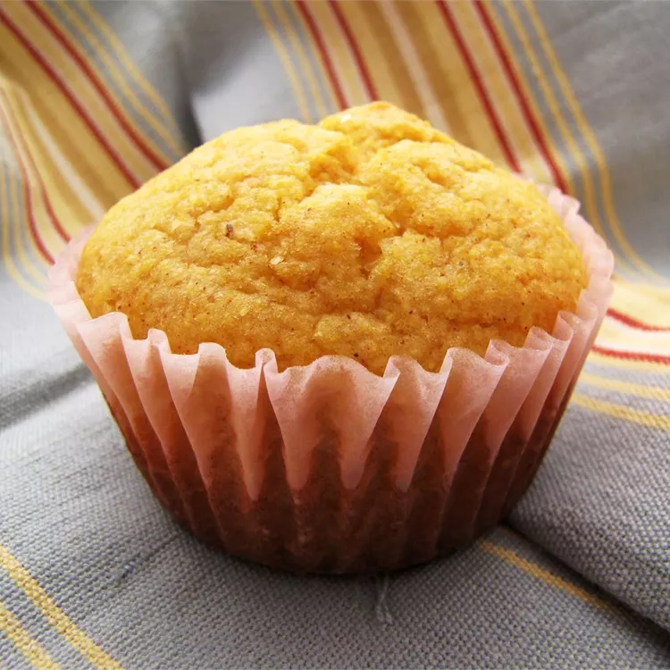

Corn Muffins

Description
These corn muffins are always a good idea. They make the perfect southern side dish to pair with all your favorite comfort foods. This top-rated corn muffin recipe is incredibly easy to make, comes together quickly with pantry staples, and will be beloved by everyone at your table.
Ingredients
- 1 cup cornmeal
- 1 cup all-purpose flour
- 1/3 cup white sugar
- 2 teaspoons baking powder
- 1/2 teaspoon salt
- 1 egg, beaten
- 1/4 cup canola oil
- 1 cup milk
Steps
- Preheat the oven to 400 degrees F (200 degrees C). Grease a muffin pan or line with paper muffin liners.
- Mix cornmeal, flour, sugar, baking powder, and salt together in a large bowl, mix together
- Add egg, oil, and milk; stir gently to combine.
- Spoon batter into prepared muffin cups.
- Bake in the preheated oven until a toothpick inserted into a muffin comes out clean, about 15 to 20 minutes.
- Enjoy!
Home